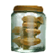
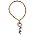

Гигантская Фляга Здоровья
Предметы / Фляги и зелья
Открыть в интерактивной вики →
| Вес | 1 |
|---|---|
| Цена | 10 000 |
Описание
Бутылка содержит специальное вещество, способное улучшить снаряжение X - XII рангов. Процесс требует дополнительного Ингибитора.
Общий вес итемов на 1хГигантская Фляга Здоровья: 76
Общий вес итемов на 1х
Гигантская Фляга Здоровья: 76| Бутылка с особым веществом, способным улучшить снаряжение ранга X–XII. Процесс дополнительно требует ингибитора. |
Рецепт
Создание: 1x  Большая Фляга Здоровья + 4x
Большая Фляга Здоровья + 4x
Большая Фляга Здоровья + 4x 
Опёнок зимний + 3x
Амулет орков + 3.5kГде создать
Изготовление
Изготавливает Хунцвиль в Гарнизоне Дмортер за 3 500 золота после доставки ингредиентов:
|